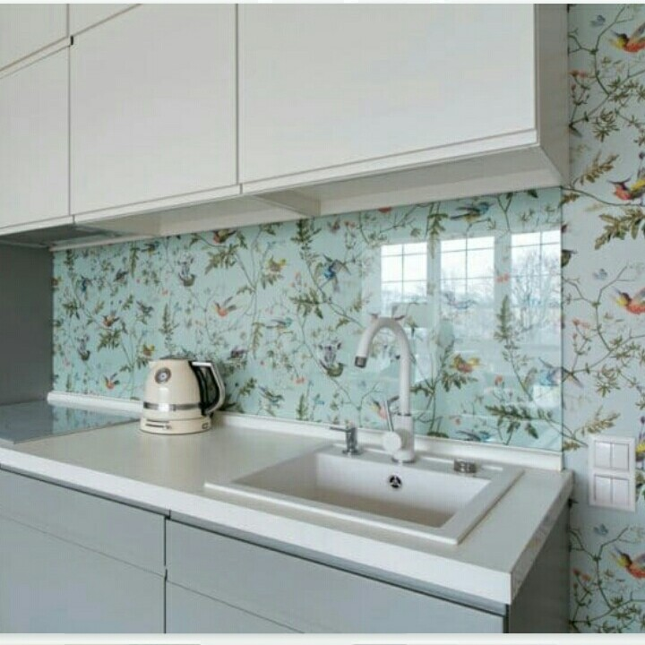
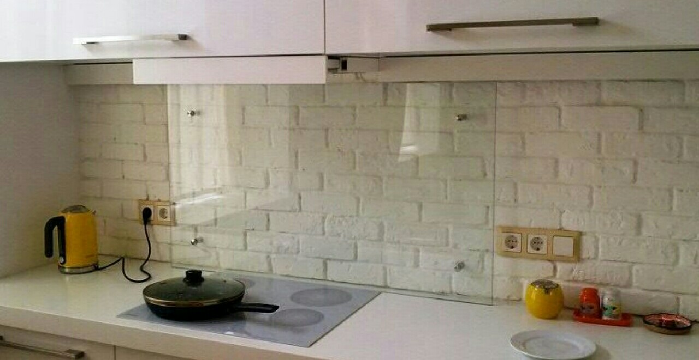
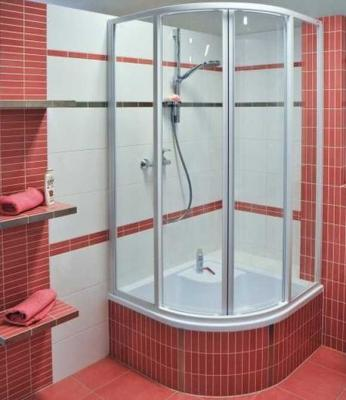
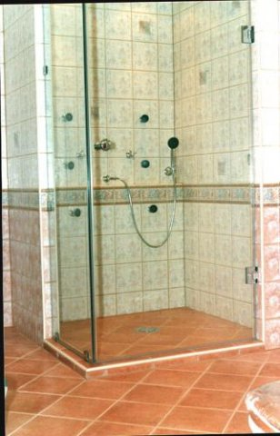

Стекло
2мм, 3мм, 4мм, 5мм, 6мм, 8мм.
4 мм разных рисунков
Cтекло Planilux (clear) , от 2мм до 22мм;
Cтекло Diamant (extra clear), от 4 до 19мм;
Cтекло Parsol тонированное в массе от 4 до 10мм различной цветовой гаммы:Бронза, серое, зелёное, голубое;
Cтекло Satin от 4 до 10мм , бесцветное, бронза, серое, синее;
Cтекло узорчатое, стекло прокатное, производства Германии,. Польши в широком ассортименте.
Обработка стекло-зеркальных изделий для производства изделий и стекла в интерьере:
Шлифовку- полировку кромки прямую и фигурную;
Фасет кромки от 0,5 до 50мм прямой и фигурный;
Матирование стекла художественное и сплошное (песком, корундом);
Сверление отверстий от 4м до 500 мм;
Витражная роспись стекла;
Художественный витраж Тифани;
Покрытие стекла безопасной, тонировочной плёнкой;
Изготовление триплекса;
Каление;
Изготовление художественных стеклофасадов;
Кухонные фартуки из стекла/ зеркала.
Изделия из стекла в интерьере комплектуются высококачественной фурнитурой:
полкодержателями;
крепежами;
светодиодными и галогеновыми подсветками;
профилем;
комплектацией для столов.
Стекло для кухонных фартуков с рисунком и без.


Стекло для душевых кабин каленое, под заказ.

